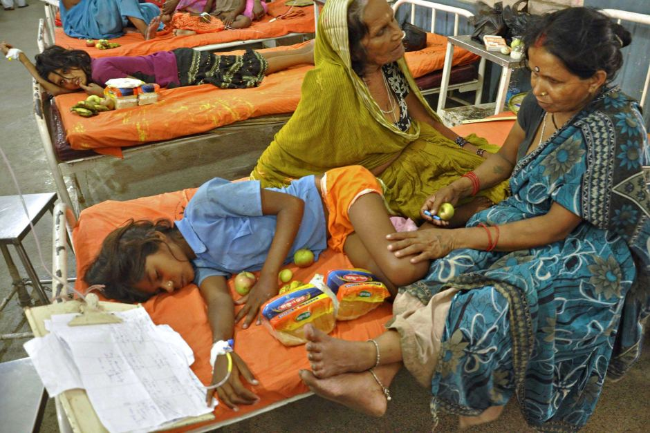
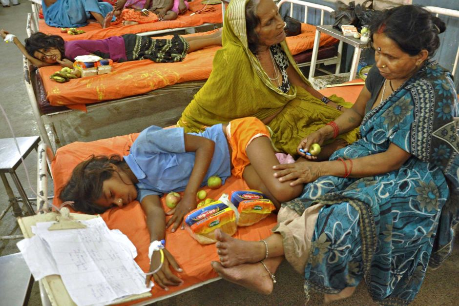

Blog
Rural health care in India faces a crisis unmatched by any other sector of the economy. In the present scenario, Indian rural health care faces a crisis unmatched by any other social sector. Nearly 86% of all the medical visits in India are made by ruralites with the majority still traveling more than 100 km to avail healthcare facility of which 70-80% is born out of pocket landing them in poverty. Government succeeded in generating infrastructures in urban areas but failed to do so in rural, sustaining 70% of the Indian population. Though the existing infrastructural setup for providing health care in rural India is on a right track, the qualitative and quantitative availability of primary health care facilities is far less than the defined norms by the World Health Organization. Union Ministry of Health and Family Welfare figure of 2005 suggests a shortfall of 12% for sub-centers, 16% for Primary Health Centers, and 50% for Community Health Centers than prescribed norms with 49.7%, 78%, and 91.5% for sub-centers, Primary Health Centers and Community Health Centers located in government buildings and rest in non-government buildings respectively requiring a figure of 60,762, 2948 and 205 additional buildings for sub-centers, Primary Health Centers and Community Health Centers respectively. Location of Primary Health Centers and Community Health Centers far from rural areas procures a heavy daily loss of wages. This leads the rural people to access facilities of private health care practitioners, usually unregistered at affordable charges in their villages.
National Health Policy 2016 and budgetary announcements of the year 2018 named Ayushman Bharat have components of strengthening healthcare in India and improving access to secondary and tertiary care through a near-universal health insurance scheme.
Firstly, the PMJAY foundation could include primary healthcare services. Private Health Care should retain the gatekeeping functions: patients should first present at PHCs, and only when referred by PHCs, should they be entitled to insurance cover under PMJAY for secondary or tertiary care. Such an arrangement would help in increasing the utilization of PHCs and maintain the primacy of primary healthcare. It would also help in ensuring efficiency by reducing unnecessary referrals.
The provision of healthcare for rural areas hinges on the affordability of treatment and diagnostic costs. In order to propel the indigenous production of medical devices, drugs, and surgical and diagnostics, biomedical scientists in hospitals, research institutions, and elsewhere can come together and translate their knowledge into affordable medical products. By instituting ‘innovation clinics’ the consulting scientists and doctors could join hands in order to translate their respective knowledge useful for the bedside of patients around the Model Rural Research Centre of ICMR.
Thus, while innovative doable solutions are available within the existing financial and human resources, one would look forward to the grand initiative from the determined Prime Minister to act as a radical plastic surgeon rather than the cosmetic one to make the life beautiful of the poor, deprived sick and ailing population in the rural areas.